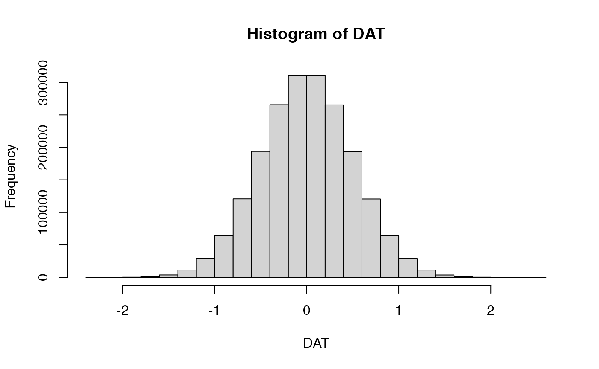
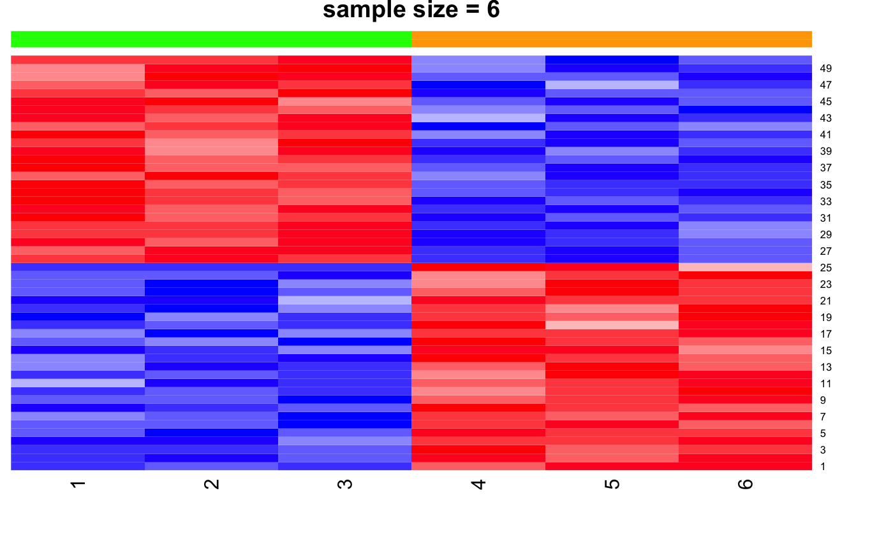
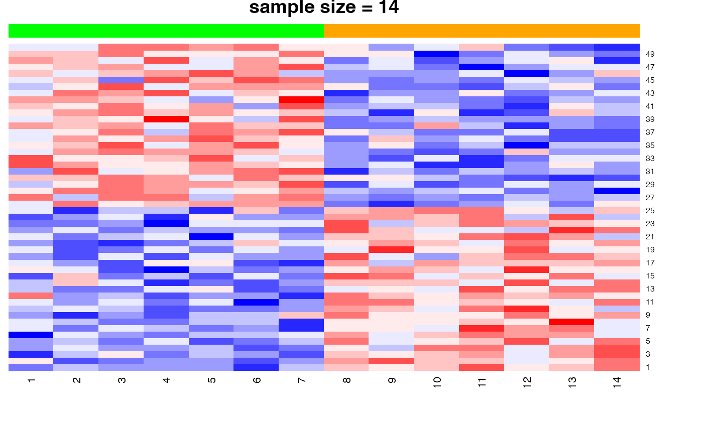
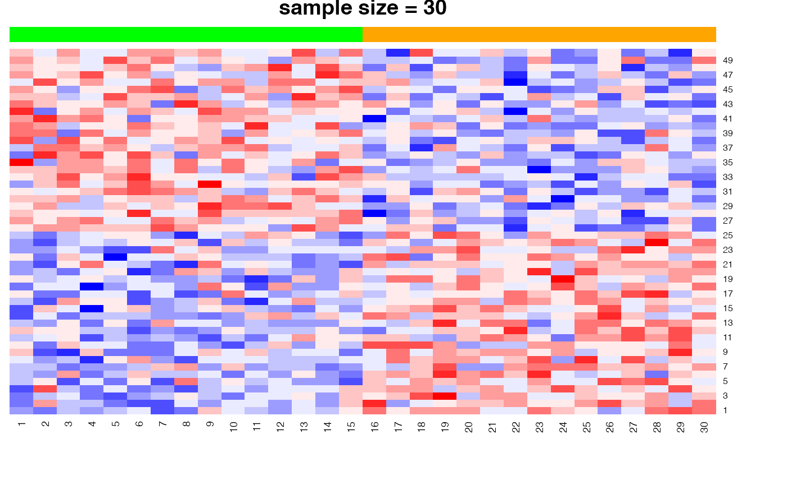
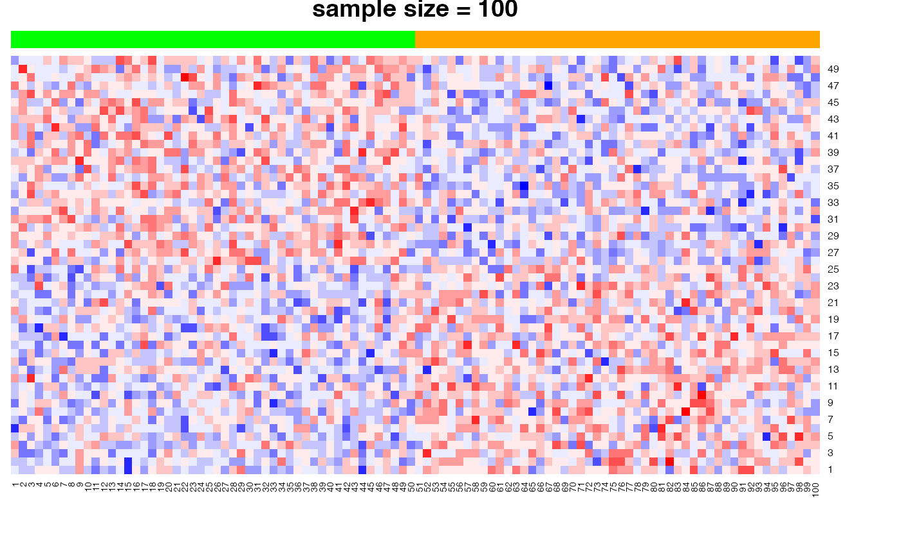

vignettes/docs/SampleSize.Rmd
SampleSize.RmdIn this module, we show how testing for multiple hypotheses (genes) can increase the chance of false positives, especially for small sample sizes.
require(heatmap.plus)Here we show the scenario presented in class (slide “Gene markers selection: better than chance?”). In the examples below, we show heatmaps corresponding to random noise, and we show that, if enough hypotheses are tested (in this case, 10,000), and the sample size is sufficiently small (e.g., n=6), we can easily identify ‘genes’ whose expression pattern seems to be strongly associated with the phenotype (in this case, a random head/tail), as suggested by the heatmap with a clear blue-to-red pattern. As the sample size increases (e.g., n=100), it is more difficult to be ‘fooled’, as the corresponding heatmap shows a less clear blue-to-red pattern.
We start by generating a large [10,000x100] matrix filled with random values drawn from a Gaussian distribution with mean=0 and stdev=0.5.
set.seed(123) # for reproducible results
Nrow <- 10000
Ncol <- 100
DAT <- matrix(rnorm(Ncol*Nrow,mean=0,sd=0.5),nrow=Nrow,ncol=Ncol)
hist(DAT)
We then pick a small subset of columns from this matrix and randomly assign them a binary (0-1) phenotype. We then pick the top 25 markers associated to 0 and 1, and plot the corresponding heatmaps.
## creating a black-to-red palette for heatmap display
ramp.br <- colorRamp(c( "blue","white","red"))
palette.blue2red <- rgb( ramp.br(seq(0, 1, length = 14)), max = 255)
## wrapper function extracting t-statistic and p-value from a call to function t.test
tscore <- function(y,x) {
tmp <- t.test(y~x)
c(score=tmp$statistic,pval=tmp$p.value)
}
## carry out multiple differential analysis on progressively larger sample sizes
for (ndraw in c(6,14,30,100) )
{
## randomly select Ncol columns from the full matrix
DATi <- DAT[,colDraw <- sample(Ncol,size=ndraw)]
## generate a (head/tail) phenotype of proper size
pheno <- factor(rep(c('head','tail'),each=ndraw/2))
## perform t.test on each data row with respect to the random phenotype
DIFi <- t(apply(DATi,1,tscore,x=pheno))
## pick top 25 markers in each direction
topMarkers <- c(order(DIFi[,1],decreasing=FALSE)[1:25],order(DIFi[,1],decreasing=TRUE)[1:25])
## visualize the corresponding heatmap of 50 markers
CSC <- c('green','orange')[pheno] # green=head, orange=tail
heatmap.plus(DATi[topMarkers,],col=palette.blue2red,Colv=NA,Rowv=NA,ColSideColors=cbind(CSC,CSC),
main=paste("sample size =",ndraw))
## show the top markers (by p-value)
print(head(cbind(DIFi,FDR=p.adjust(DIFi[,2],method="BH"))[topMarkers,]))
} 
## score.t pval FDR
## [1,] -11.347225 0.0005607121 0.9976306
## [2,] -11.141542 0.0003839618 0.9976306
## [3,] -9.973578 0.0017062988 0.9976306
## [4,] -9.125245 0.0051549978 0.9976306
## [5,] -8.658030 0.0033664075 0.9976306
## [6,] -8.649186 0.0038582228 0.9976306
## score.t pval FDR
## [1,] -5.826310 9.253512e-05 0.8228090
## [2,] -5.422426 1.645618e-04 0.8228090
## [3,] -4.659613 6.096780e-04 0.9748352
## [4,] -4.592077 1.588525e-03 0.9748352
## [5,] -4.340584 1.216714e-03 0.9748352
## [6,] -4.025298 1.808353e-03 0.9748352
## score.t pval FDR
## [1,] -5.287057 0.0000138538 0.1385380
## [2,] -4.298420 0.0001897173 0.7915671
## [3,] -4.027061 0.0004073712 0.7915671
## [4,] -4.009203 0.0004556804 0.7915671
## [5,] -3.824368 0.0007124104 0.7915671
## [6,] -3.639743 0.0011916003 0.7934205
## score.t pval FDR
## [1,] -4.021171 0.0001140090 0.602178
## [2,] -3.896476 0.0001879315 0.602178
## [3,] -3.797355 0.0002536329 0.602178
## [4,] -3.669176 0.0003959175 0.602178
## [5,] -3.615838 0.0004827385 0.602178
## [6,] -3.591183 0.0005167335 0.602178